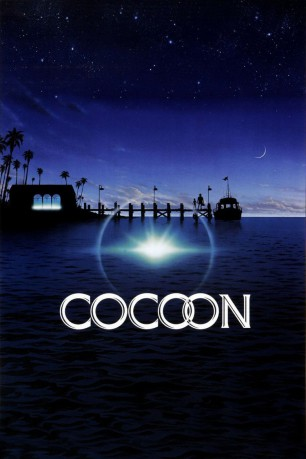

#4987 Cocoon
Auszeichnungen: 2 Oscars gewonnen
 
 IMDB-Wertung: 6.7 / 10
IMDB-Wertung: 6.7 / 10  Tomatometer: 77
Tomatometer: 77  Metascore: 0
Metascore: 0 
Aliens besuchten unseren Planeten und sie sind uns nicht feindlich gesinnt. Stattdessen warten sie in robusten Kokons auf dem Meeresboden, bis sie heimgeholt werden. Als sich nun eine neue Gruppe an die Rückholaktion macht, werden die Kokons im Swimming Pool eines stillgelegten Hauses zwischengelagert. Genau dieses Schwimmbecken nützen aber heimlich die Senioren Art, Ben und Joe, die unwillig über ihr Alter, doch relativ glücklich mit ihren Frauen in einem Heim leben. Das Bad in dem Pool jedoch hat ungeahnte Wirkungen: plötzlich fühlen sich alle drei verjüngt, kräftiger und frischer. Verständlicherweise lassen sie auch ihre Frauen an dem Effekt teilhaben. Doch dadurch werden bald noch andere darauf aufmerksam, was für die Aliens eine Gefahr bedeutet...
Jahr: 1985
Dauer: 117 Minuten
FSK: 6
Land: USA Studio: 20th Century FoxTonspuren: DD2.0 - ,
Untertitel:
Auflösung: 1080p (1920x1040) Größe: 8284 MB
Genre: Sci-Fi
Regisseur:  Ron Howard
Ron Howard
Drehbuch: Randall Miller
Soundtrack:
Darsteller:
 Don Ameche als Art Selwyn
Don Ameche als Art Selwyn Wilford Brimley als Ben Luckett
Wilford Brimley als Ben Luckett Hume Cronyn als Joe Finley
Hume Cronyn als Joe Finley Brian Dennehy als Walter
Brian Dennehy als Walter- Jack Gilford als Bernie Lefkowitz
 Steve Guttenberg als Jack Bonner
Steve Guttenberg als Jack Bonner Maureen Stapleton als Mary Luckett
Maureen Stapleton als Mary Luckett Jessica Tandy als Alma Finley
Jessica Tandy als Alma Finley- Gwen Verdon als Bess McCarthy
- Tahnee Welch als Kitty
- Barret Oliver als David
 Linda Harrison als Susan
Linda Harrison als Susan Clint Howard als Rico
Clint Howard als Rico Rance Howard als St. Petersburg Dectective
Rance Howard als St. Petersburg Dectective Jean Speegle Howard als Woman
Jean Speegle Howard als Woman Fred Astaire als Himself, film clip from 'The Gay Divorcee' , archive footage, uncredited
Fred Astaire als Himself, film clip from 'The Gay Divorcee' , archive footage, uncredited- Jim Fitzpatrick als Dock Worker , uncredited
 Reginald Gardiner als Himself, film clip from 'Flying Deuces' , archive footage, uncredited
Reginald Gardiner als Himself, film clip from 'Flying Deuces' , archive footage, uncredited Oliver Hardy als Himself, film clip from 'Flying Deuces' , archive footage, uncredited
Oliver Hardy als Himself, film clip from 'Flying Deuces' , archive footage, uncredited Stan Laurel als Himself, film clip from 'Flying Deuces' , archive footage, uncredited
Stan Laurel als Himself, film clip from 'Flying Deuces' , archive footage, uncredited- Carmen Miranda als Herself, Vocalist on Recording: 'Weekend in Havana' , archive sound, uncredited
- Jean Parker als Herself, film clip from 'Flying Deuces' , archive footage, uncredited
- Ginger Rogers als Herself, film clip from 'The Gay Divorcee' , archive footage, uncredited
- Herta Ware als Rose 'Rosie' Lefkowitz
- Tyrone Power Jr. als Pillsbury
- Charles Lampkin als Pops
- Mike Nomad als Doc
- Jorge Gil als Lou Pine
- James Ritz als DMV Clerk
- Charles Rainsbury als Smiley
- Wendy J. Cooke als Alien
- Pamela Prescott als Alien
- Dinah Sue Rowley als Alien
- Gabriella Sinclair als Alien
- Cyndi Vicino als Bank Teller
- Russ Wheeler als Doctor
- Harold Bergman als Reverend
- Ivy Thayer als Waitress
- Fred Broderson als Kirk
- Mark Cheresnick als Salvatore
- Bette Shoor als Realtor
- Mark Simpson als Coast Guard First Class BM
- Robert Slacum Jr. als Coast Guard Second Class BM
- Charles Voelker als Leader, New Yorkers Dance Band
- Irving Krone als Jasper
- Clarence Thomas als Policeman
- Ted Science als Policeman
- Kirk Alderman als Dancer , uncredited
- Tracy Roberts als Bar Patron , uncredited
Datei: X:\2-Dilogie(A-F)\Cocoon\Cocoon (1985, FSK6, 1920x1040).mkv seit 07.12.2016
Festplatte: HD Collection-2(A-Z)-3(A-M)
 Alle Filme aus Gruppe '2-Dilogie(A-F)\Cocoon'
Alle Filme aus Gruppe '2-Dilogie(A-F)\Cocoon'